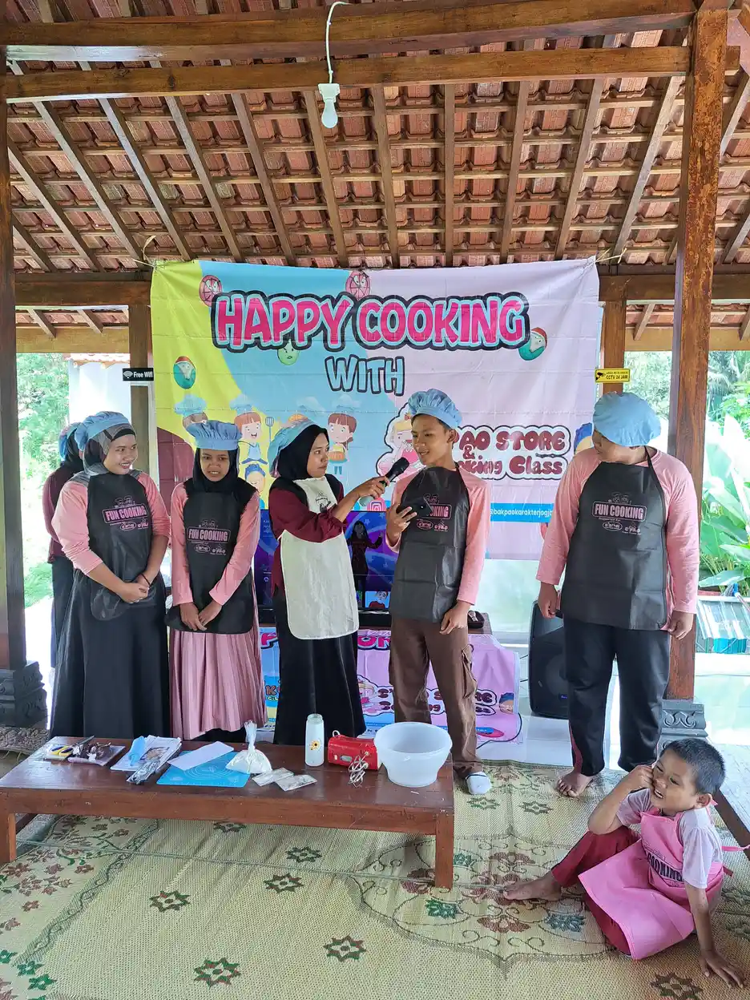
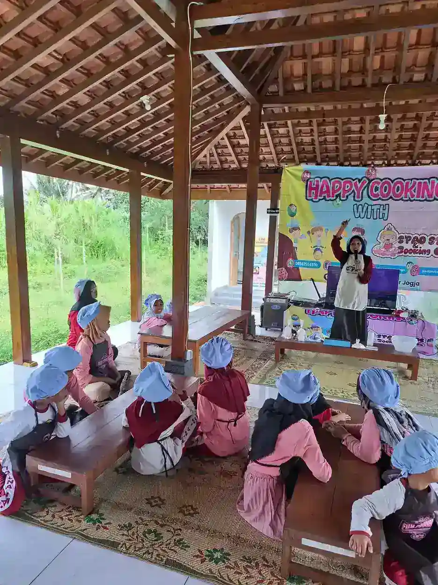
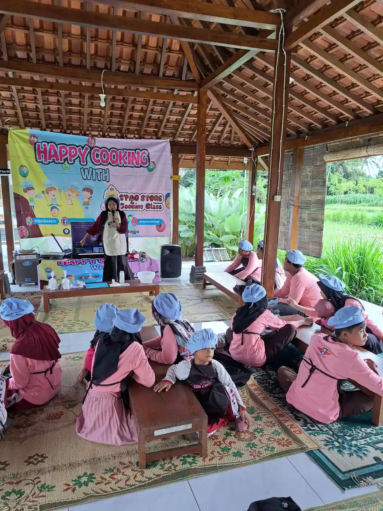
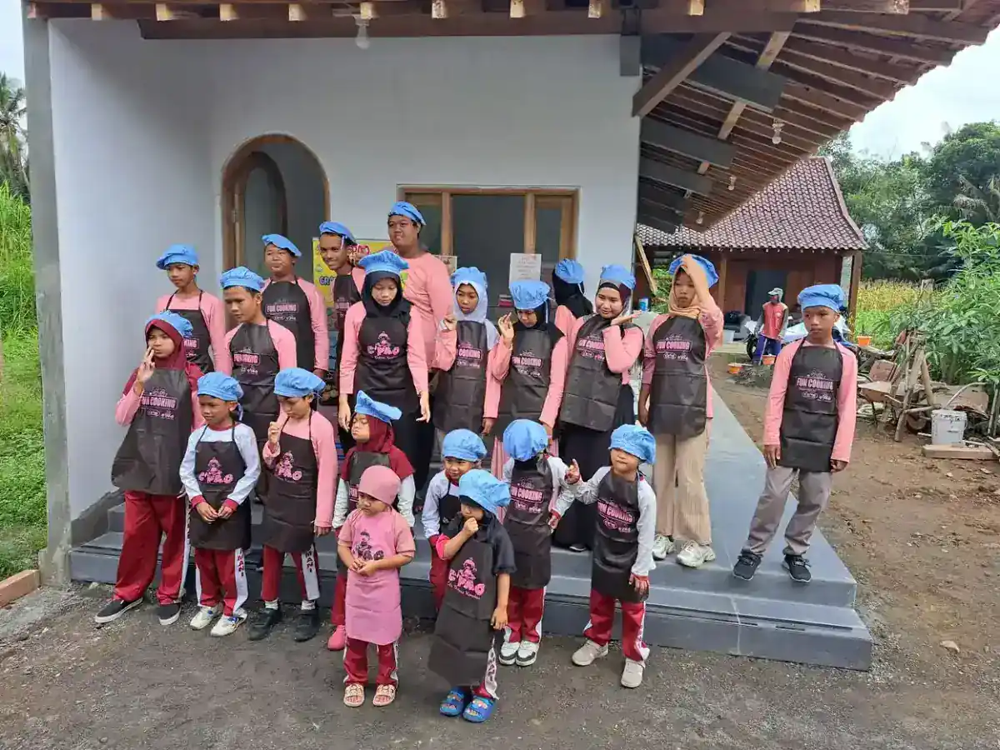

Laundry skills anak disabilitas intelektual adalah pembelajaran keterampilan mengurus pakaian melalui langkah kecil yang dapat diamati: mengumpulkan, memilah, menyiapkan pencucian, mengeringkan, melipat, lalu menyimpan. Anak tidak harus mengerjakan semuanya. Tujuannya ialah partisipasi yang aman, kesempatan memilih, dan dukungan yang sesuai kebutuhan individual.
Permintaan “tolong cuci baju” sebenarnya memuat banyak keputusan. Ada warna yang perlu dipisahkan, saku yang perlu diperiksa, suara mesin, kain basah yang berat, dan bahan kimia yang tidak boleh dimainkan. Karena itu, pendamping sebaiknya memisahkan bagian belajar dari bagian berbahaya. Panduan ini menawarkan rancangan kegiatan keluarga dan guru, bukan resep terapi atau janji bahwa kemampuan tertentu pasti tercapai.
Istilah kondisi tidak menjelaskan seluruh kemampuan seseorang. Baca pengantar disabilitas intelektual untuk memahami konteksnya, kemudian kembali pada pertanyaan praktis: pakaian apa yang ingin anak urus, bantuan apa yang ia butuhkan, dan bagaimana ia menyatakan ingin berhenti?
Daftar Isi
- Laundry sebagai partisipasi, bukan tes nilai anak
- Mulai dari asesmen, pilihan, dan persetujuan
- Tabel analisis tugas yang bisa disesuaikan
- Memilah pakaian dan memeriksa saku
- Simulasi kering sebelum mendekati mesin
- Mesin cuci tetap dalam kendali orang dewasa
- Deterjen, penyimpanan, dan respons paparan
- Mengeringkan pakaian dengan jalur yang aman
- Melipat dan menyimpan sampai tugas selesai
- Chaining dan pengurangan bantuan bertahap
- Catatan kemajuan dan kerja sama rumah sekolah
- Pertanyaan tentang laundry skills
- Langkah kecil yang bermakna untuk keluarga
Laundry sebagai Partisipasi, Bukan Tes Nilai Anak
Mengurus pakaian berkaitan dengan kenyamanan, kebersihan, dan kendali atas barang pribadi. Seorang anak dapat merasa terbantu ketika kaus favoritnya tersedia di tempat yang ia pahami. Akan tetapi, manfaat ini tidak berarti laundry harus menjadi kewajiban yang memaksa atau ukuran apakah anak “cukup mandiri”. Kegiatan rumah tangga adalah kesempatan belajar, bukan alasan mengurangi hak anak untuk beristirahat, bermain, atau memperoleh bantuan.
Panduan pendidikan A Love for Special Learning menguraikan keterampilan memilah, melipat, menggantung, dan memakai perlengkapan sebagai bagian yang dapat diajarkan. The OT Toolbox menambahkan bahwa tuntutan motorik, persepsi, pemrosesan sensori, dan perencanaan perlu diperhatikan. Rujukan tersebut membantu memetakan kegiatan, bukan membuktikan bahwa satu metode cocok untuk setiap anak.
Di rumah, kontribusi bermakna dapat berupa membawa satu handuk ringan ke rak, bukan mengangkut keranjang penuh. Keterampilan yang digunakan dengan kartu gambar tetap merupakan pencapaian. Orang dewasa juga memakai label pakaian, alarm, dan petunjuk mesin; anak tidak perlu diminta berhenti menggunakan alat bantu yang memudahkan akses. Hubungkan latihan dengan tujuan keluarga yang realistis dan prinsip pendidikan inklusi, yaitu membuka kesempatan berpartisipasi dengan dukungan.
Mulai dari Asesmen, Pilihan, dan Persetujuan
Sebelum menentukan target, amati kemampuan dalam konteks sebenarnya. Apakah anak dapat memilih benda dari dua pilihan, memahami satu instruksi, memegang kain, membawa barang ringan, dan meminta bantuan? Amati pula jangkauan tangan, keseimbangan, penglihatan, pendengaran, kelelahan, serta respons terhadap suara dan tekstur. Jika ada masalah gerak, nyeri, atau risiko keselamatan, minta arahan profesional yang relevan. Informasi asesmen ABK dan terapi okupasi dapat membantu menyiapkan percakapan, tanpa menggantikan penilaian langsung.
Jangan menetapkan kemampuan dari usia, skor IQ, atau nama diagnosis saja. Kemampuan memilah belum tentu disertai pemahaman bahaya listrik. Sebaliknya, anak yang sulit menjawab pertanyaan lisan mungkin dapat mengikuti foto urutan dengan baik. Mulai dengan pengamatan pada bahan aman, bukan sengaja membiarkan anak gagal di dekat mesin untuk menguji keberaniannya.
Tawarkan pilihan nyata, misalnya “mau lipat handuk atau pasangkan kaus kaki?” Jelaskan kegiatan, minta kesediaan dengan bahasa atau alat komunikasi yang dipahami, dan perhatikan penolakan melalui gestur atau perubahan perilaku. Persetujuan wali tidak menghapus kebutuhan mendengarkan anak. Jika ia menolak, periksa apakah tugas terlalu panjang, bau terlalu kuat, atau tubuhnya lelah. Jeda bukan hadiah yang harus diperoleh melalui kepatuhan; jeda adalah dukungan yang boleh diminta.

Tabel Analisis Tugas yang Bisa Disesuaikan
Analisis tugas memecah kegiatan besar menjadi tindakan kecil yang dapat diajarkan dan dinilai. IRIS Center menjelaskan prinsip ini serta penggunaan bantuan dan waktu tunggu. Berikut adalah contoh rancangan edukatif, bukan protokol wajib. Sesuaikan dengan mesin, kondisi rumah, dan kebutuhan anak. Baris yang melibatkan bahaya tidak otomatis menjadi target belajar mandiri ketika baris lain sudah berhasil.
| Langkah yang diamati | Kesempatan anak | Bantuan atau adaptasi | Batas keselamatan |
|---|---|---|---|
| Memilih tugas | Menunjuk handuk atau kaus kaki | Dua benda nyata atau kartu pilihan | Terima penolakan dan pilihan jeda |
| Mengumpulkan pakaian | Memasukkan satu benda ke keranjang | Keranjang ringan dekat tempat duduk | Tidak membawa beban melebihi kemampuan |
| Memilah | Mencocokkan kain dengan contoh di keranjang | Label kontras dan contoh kain | Orang dewasa memeriksa label perawatan |
| Memeriksa saku | Membalik saku pakaian latihan | Contoh tindakan dan baki benda | Orang dewasa menangani benda tajam atau tidak dikenal |
| Menyiapkan pencucian | Menaruh kain di keranjang simulasi | Foto urutan tanpa bahan kimia | Mesin, air, listrik, dan deterjen dikelola dewasa |
| Menunggu proses | Memindah kartu ke kolom menunggu | Penanda akhir yang mudah dipahami | Tidak menyentuh atau membuka mesin berjalan |
| Menjemur | Menaruh kain ringan pada rak rendah | Penjepit mudah ditekan bila aman | Rak stabil, jalur kering, tanpa memanjat |
| Melipat | Mempertemukan dua tepi handuk | Garis meja atau contoh lipatan | Gunakan kain bersih yang sudah kering |
| Menyimpan | Menaruh pakaian pada tempat berlabel | Foto isi rak dan tinggi yang terjangkau | Tidak menaiki kursi atau menarik lemari |
Satu baris boleh dipecah lagi. “Melipat handuk” dapat menjadi meletakkan kain, meratakan, menemukan dua sudut, mempertemukan sudut, dan menekan lipatan. Jika anak memahami satu langkah dengan baik, jangan menambahkan seluruh baris berikutnya sekaligus. Catatan bantuan setiap langkah lebih informatif daripada kesan umum “hari ini lancar”. Dengan begitu, pendamping dapat mengubah materi atau posisi tanpa menyalahkan anak.
Memilah Pakaian dan Memeriksa Saku
Mulai dari pakaian bersih dan kering untuk latihan konsep. Siapkan dua kelompok yang mudah dibedakan, misalnya handuk dan kaus kaki, lalu gunakan satu contoh di tiap keranjang. Setelah pola dipahami, beralih ke pemilahan yang benar-benar diperlukan keluarga. Pemisahan warna dan jenis bahan mengikuti label perawatan serta kebiasaan pencucian yang aman, bukan sekadar aturan bahwa semua pakaian putih selalu boleh dicampur.
Instruksi “taruh kaus kaki di sini” lebih jelas daripada “sortir yang benar”. Tunjuk label bila perlu, kemudian beri waktu anak melihat dan memilih. Jika ia keliru, berikan contoh ulang dengan tenang. Jangan mengulang instruksi cepat sambil menggerakkan tangannya tanpa izin. Perhatikan bahwa warna saja tidak selalu aksesibel bagi anak dengan hambatan penglihatan; benda contoh, tekstur, atau simbol dapat menjadi alternatif.
Untuk saku, gunakan pakaian latihan yang telah diperiksa orang dewasa. Ajarkan membuka atau membalik saku dan menaruh benda aman ke baki. Pada pakaian sungguhan, orang dewasa tetap memeriksa benda tajam, baterai, obat, uang, dan benda yang tidak dikenal. Pakaian yang terkena cairan tubuh atau bahan berbahaya bukan bahan awal latihan anak. Sesudah menangani pakaian kotor, bantu kebersihan tangan. Kegiatan ini dapat terkait dengan pembelajaran keterampilan fungsional, tetapi keluarga tidak perlu membuat target kerja yang membebani.
Simulasi Kering Sebelum Mendekati Mesin
Simulasi kering memungkinkan anak mengenali urutan tanpa air, deterjen, atau komponen bergerak. Gunakan keranjang sebagai tempat memasukkan kain, bukan mengajak anak bermain di dalam tabung mesin yang sedang tidak dipakai. Siapkan kartu “pilih, taruh, tunggu, ambil” dan pindahkan kain antarwadah yang stabil. Beri penjelasan bahwa keranjang latihan berbeda dari mesin sebenarnya, sehingga aturan bermain tidak terbawa ke peralatan listrik.
Latihan dapat berakhir setelah satu tujuan tercapai, seperti menaruh dua jenis kain pada tempat yang berbeda. Contoh jumlah tersebut merupakan pilihan kegiatan, bukan dosis yang harus diikuti. Bila memerlukan rekaman contoh, buat video tangan orang dewasa yang menunjukkan satu tindakan menggunakan bahan aman. Studi Horn dan rekan tentang video prompting laundry memberi contoh pemecahan demonstrasi, tetapi bukan jaminan hasil untuk anak atau alasan menyalin prosedur mesin lama.
Dalam simulasi, latih pula kata atau simbol “tolong”, “berhenti”, dan “selesai”. Anak yang dapat meminta bantuan mempunyai keterampilan penting, bukan dianggap gagal mandiri. Foto urutan sebaiknya memperlihatkan perlengkapan rumah sendiri agar mudah dikenali. Panduan jadwal visual dapat memberi ide format, meskipun penggunaan gambar tidak terbatas pada anak autis. Hindari lembar penuh teks jika anak lebih memahami benda nyata.

Mesin Cuci Tetap dalam Kendali Orang Dewasa
Pada rancangan awal ini, orang dewasa bertanggung jawab atas pengoperasian mesin, sambungan listrik, aliran air, takaran deterjen, pemilihan program, dan pemeriksaan akhir. Anak dapat menyaksikan dari posisi aman atau menyiapkan keranjang, tanpa akses bebas ke tombol dan pintu. Bila di kemudian hari ada target penggunaan mesin, buat asesmen khusus peralatan bersama pihak yang kompeten. Keterampilan pada mesin tertentu tidak otomatis berlaku pada model lain.
Baca petunjuk pabrik. Jangan mengandalkan istilah “child lock” sebagai pengganti pengawasan: fungsi kunci dapat berbeda, dan tidak semua kunci tombol mengunci pintu. Pastikan tidak ada orang atau hewan di dalam tabung sebelum mesin dinyalakan. Mesin bukan tempat bermain, bersembunyi, atau duduk. Jangan memasukkan tangan ketika tabung bergerak, melewati pengaman, membuka paksa, atau membiarkan anak menarik pintu sebagai pegangan.
American Academy of Pediatrics menekankan keamanan ruang laundry, pintu mesin, dan produk pencuci. Pertahankan lantai kering, singkirkan kabel dari jalur jalan, serta cegah akses tanpa pendamping. Bila mesin bocor, berbau terbakar, atau menunjukkan gangguan, hentikan kegiatan dan minta pemeriksaan. Jangan menjadikan kerusakan sebagai kesempatan eksperimen. Aktivitas menunggu bisa dilakukan di ruang lain dengan penanda visual, bukan duduk terlalu dekat dengan mesin yang bergetar.
Deterjen, Penyimpanan, dan Respons Paparan
Deterjen adalah bahan kimia rumah tangga, bukan alat bermain sensori. Simpan deterjen, pelembut, pemutih, dan penghilang noda dalam kemasan asli berlabel, tertutup rapat, di lemari terkunci di luar pandangan dan jangkauan anak. Jangan memindahkan ke botol minuman atau membiarkan produk di atas mesin. Setelah digunakan, orang dewasa segera mengembalikannya ke penyimpanan. Jangan mencampur produk pembersih; ikuti label produk dan petunjuk mesin.
Kapsul deterjen dapat tampak menarik dan pecah ketika tergigit atau tertekan. Poison Control menjelaskan risiko paparan mulut, mata, kulit, serta gangguan napas. Walaupun sebuah panduan kegiatan menyarankan kapsul untuk memudahkan takaran, keselamatan lebih penting: jangan gunakan kapsul sebagai media latihan anak. Untuk simulasi, tidak diperlukan deterjen sungguhan atau kemasan bekas yang masih menyimpan residu.
Jika terjadi paparan: hentikan aktivitas, jauhkan produk, dan segera minta petunjuk tenaga kesehatan atau layanan keracunan setempat. Jangan memaksa anak muntah atau memberikan ramuan penawar. Jika isi kapsul mengenai mata, bilas dengan air mengalir lembut selama 15 menit sambil mencari bantuan. Kesulitan bernapas, kejang, atau penurunan kesadaran membutuhkan pertolongan darurat segera. Bawa informasi kemasan produk. Nomor Poison Control pada sumber Amerika Serikat bukan nomor layanan Indonesia.
Simpan kontak fasilitas kesehatan terdekat sebelum latihan dimulai. Jika keluarga membutuhkan koordinasi dukungan kegiatan, hubungi YUKA, tetapi pertanyaan atau kejadian keracunan harus ditangani layanan kesehatan, bukan menunggu balasan yayasan.
Mengeringkan Pakaian dengan Jalur yang Aman
Di banyak rumah, menjemur pada rak lebih relevan daripada memakai pengering listrik. Pilih rak stabil yang dapat dijangkau tanpa kursi, tangga, atau memanjat. Periksa jalur dari keranjang ke rak: lantai tidak licin, tidak ada kabel melintang, dan tidak perlu melewati area kendaraan atau tepi balkon. Orang dewasa mengangkat barang berat serta menyiapkan posisi. Latihan awal dapat memakai kain ringan yang sedikit lembap atau kain kering untuk mengenali gerakan.
Ajarkan membawa satu benda, membuka kain, menaruhnya pada rak, lalu kembali ke posisi awal. Penjepit dapat dipakai bila ukuran dan gaya tekan sesuai serta tidak berisiko masuk mulut. Jika sulit, menggantung di palang tanpa penjepit tetap merupakan opsi. Hindari menyamakan kemampuan menggenggam dengan kemampuan menjaga keseimbangan saat membawa kain basah. Posisi duduk, rak rendah, dan pembagian beban dapat membuat kegiatan lebih aksesibel.
Jika rumah memakai mesin pengering, kendali orang dewasa tetap berlaku. Ikuti label pakaian dan petunjuk alat. AAP mengingatkan pembersihan perangkap serat setelah penggunaan untuk membantu pencegahan kebakaran; perawatan ini menjadi tanggung jawab dewasa. Jangan memakai pakaian panas langsung sebagai bahan eksplorasi dan jangan mengajak anak meraih ke dalam tabung. Materi FIPP tentang laundry dan eksplorasi sensori memberi ide menyesuaikan suara, posisi, kontras, dan waktu tunggu, bukan izin mengekspos anak pada panas atau kimia.

Melipat dan Menyimpan Sampai Tugas Selesai
Melipat dapat dimulai dari kain berbentuk sederhana, seperti handuk kecil. Letakkan pada meja dengan tinggi yang nyaman, tunjukkan dua sudut yang akan dipertemukan, lalu beri contoh satu lipatan. Tidak perlu menuntut lipatan toko. Tujuan fungsional adalah pakaian dapat dikenali, tidak menutupi jalur jalan, dan mudah disimpan. Bila memegang kedua sudut sulit, pendamping bisa menahan satu sisi atau menyediakan garis penanda yang kontras.
Untuk kaus kaki, mulailah dari pasangan yang mudah dibedakan ukuran atau motifnya. Anak dapat menyandingkan keduanya tanpa menggulung. Untuk kaus, gunakan contoh yang sama dahulu sebelum mengubah ukuran dan bentuk. Papan lipat hanya berguna jika mudah digunakan dan aman; alat tambahan tidak selalu membuat tugas lebih sederhana. Pertahankan pilihan kegiatan ketika anak lebih menyukai menggantung daripada melipat.
Menyimpan adalah bagian penting yang sering terlupakan. Tempatkan foto pakaian pada rak atau laci yang terjangkau, kemudian latih perjalanan dari meja ke lokasi tersebut. Pastikan anak tidak menarik lemari yang tidak stabil. Ajarkan memeriksa apakah kain sudah kering dengan pendamping, bukan menyimpan kain lembap demi menyelesaikan checklist. Setelah selesai, anak dapat menandai kartu akhir dan memilih kegiatan berikutnya. Contoh keterampilan keseharian dalam dokumentasi YUKA dapat memberi konteks tentang kesempatan berkarya, tetapi bukan bukti bahwa latihan laundry ini telah diterapkan atau berhasil.
Chaining dan Pengurangan Bantuan Bertahap
Forward chaining mengajarkan bagian awal urutan, lalu menambahkan langkah berikutnya. Dalam contoh melipat, anak meletakkan handuk terlebih dahulu, sementara pendamping menyelesaikan sisanya. Backward chaining mengajarkan bagian akhir dahulu: pendamping menyiapkan handuk yang hampir terlipat, lalu anak melakukan lipatan akhir atau menaruhnya pada rak. Contoh IRIS tentang backward chaining menjelaskan pengajaran langkah terakhir sebelum bergerak ke langkah sebelumnya.
Tidak ada metode yang selalu unggul. Kajian perbandingan forward dan backward chaining menunjukkan pentingnya memperhatikan individu serta tugas. Untuk keluarga, pilih pendekatan yang bisa diterapkan konsisten, aman, dan disukai anak. Rangkaian latihan tidak harus mencakup tahap deterjen atau mesin: chaining dapat diterapkan hanya pada lipatan kain.
Prompt fading berarti mengurangi bantuan pengajaran secara bertahap. Mulai dengan bantuan yang diperlukan, seperti menunjuk kartu atau memperagakan tindakan. Setelah respons muncul, kurangi petunjuk dan beri waktu tunggu yang sesuai. Jangan sekaligus menarik bantuan visual, mempercepat tempo, dan mengganti benda. Bantuan fisik membutuhkan izin, kehati-hatian, dan kompetensi; jangan memaksa gerakan. Prinsip prompt sebagai bantuan belajar berbeda konteks dari laundry, tetapi mengingatkan bahwa tujuan dukungan adalah akses, bukan ketergantungan pada perintah. Fading tidak berarti mencabut pengawasan keselamatan.
Catatan Kemajuan dan Kerja Sama Rumah Sekolah
Buat catatan ringkas per langkah: bahan yang digunakan, bentuk bantuan, respons, dan tanda kenyamanan. Contoh format ialah “handuk kecil, kartu gambar, melipat setelah contoh, meminta jeda”. Ini hanya contoh pencatatan, bukan hasil uji anak YUKA. Pisahkan respons mandiri, respons dengan bantuan, dan langkah yang dikerjakan orang dewasa karena risiko. Jangan menghitung tindakan pendamping sebagai kemampuan anak.
Ulangi kegiatan dalam rutinitas yang dapat diprediksi tanpa menentukan tenggat seragam. Kemajuan bisa berupa lebih mudah memilih tugas, meminta bantuan lebih awal, atau mengikuti satu langkah dengan gestur alih-alih contoh penuh. Saat terjadi kesulitan, periksa dulu perubahan bahan, suara, posisi, kesehatan, atau kelelahan. Jangan langsung menyebut kemunduran sebagai malas. Ubah satu unsur sekaligus agar keluarga dapat melihat dukungan mana yang membantu.
Guru dan keluarga dapat menyepakati kata kunci, foto urutan, dan batas keselamatan yang sama. Pemindahan keterampilan dari sekolah ke rumah perlu dicoba bertahap karena rak, kain, dan lingkungan berbeda. Bagikan catatan seperlunya tanpa menyebarkan diagnosis atau rekaman anak. Dukungan keluarga dijelaskan lebih lanjut dalam panduan dukungan keluarga. Untuk melihat konteks kegiatan yang benar-benar didokumentasikan, gunakan galeri YUKA dan informasi program; foto memasak di artikel ini tidak menunjukkan layanan laundry.

Pertanyaan tentang Laundry Skills
Apa yang dimaksud laundry skills anak disabilitas intelektual?
Laundry skills adalah keterampilan mengelola pakaian, mulai dari memilah hingga menyimpan pakaian bersih. Pembelajaran dapat berfokus pada satu bagian yang aman dan bermakna sesuai asesmen individual, bukan menuntut anak menjalankan seluruh proses sendiri.
Apakah anak harus menguasai mesin cuci sebelum belajar laundry?
Tidak. Anak dapat memulai dari kegiatan kering seperti memasukkan pakaian ke keranjang, mencocokkan kaus kaki, atau melipat handuk. Pengoperasian mesin dan penggunaan bahan kimia tetap berada dalam kendali orang dewasa pada rancangan latihan awal ini.
Bagaimana memilih antara forward chaining dan backward chaining?
Forward chaining memulai pengajaran dari langkah pertama, sedangkan backward chaining mengajarkan langkah terakhir lebih dahulu setelah pendamping menyiapkan langkah sebelumnya. Pilih berdasarkan respons, preferensi, dan kebutuhan anak; tidak ada cara yang selalu terbaik untuk semua orang.
Bolehkah kapsul deterjen dipakai sebagai alat latihan anak?
Tidak. Kapsul deterjen bukan mainan atau media latihan. Simpan semua produk laundry dalam kemasan asli berlabel, tertutup rapat, di lemari terkunci di luar pandangan dan jangkauan anak. Untuk simulasi gunakan bahan kering yang aman tanpa bahan kimia.
Apa yang perlu dilakukan jika deterjen mengenai anak?
Hentikan kegiatan dan segera minta petunjuk tenaga kesehatan atau layanan keracunan setempat. Jangan memaksa muntah. Jika mengenai mata, bilas dengan air mengalir lembut selama 15 menit sambil mencari bantuan. Gangguan napas atau penurunan kesadaran membutuhkan pertolongan darurat segera.
Bagaimana mengurangi bantuan tanpa membuat anak frustrasi?
Berikan kesempatan merespons dengan waktu tunggu yang sesuai, lalu gunakan bantuan yang diperlukan. Kurangi instruksi, gestur, atau contoh secara bertahap hanya pada langkah aman yang mulai dikuasai. Kartu urutan boleh tetap dipakai sebagai alat akses, dan anak boleh meminta jeda.
Apakah kemampuan melipat berarti anak sudah aman mencuci sendiri?
Tidak. Kemampuan melipat tidak membuktikan kemampuan menilai bahaya mesin, air, listrik, atau deterjen. Nilai setiap langkah secara terpisah dan pertahankan pengawasan pada bagian berisiko. Keberhasilan juga dapat berupa partisipasi aman dengan bantuan yang tepat.
Langkah Kecil yang Bermakna untuk Keluarga
Mulailah dengan bagian laundry yang aman, dapat dipilih, dan jelas akhirnya. Kumpulkan bahan kering, tentukan satu target sederhana, siapkan cara meminta bantuan, dan sepakati kapan berhenti. Orang dewasa tidak perlu menunggu anak menguasai semua konsep sebelum memberi kesempatan memilah kain. Namun kesempatan belajar tidak boleh menghilangkan batas pengamanan kimia, mesin, dan lingkungan.
Jika tugas tetap sulit meskipun sudah disederhanakan, bicarakan hambatan secara konkret dengan guru atau profesional yang sesuai. Sampaikan apa yang terlihat dan bantuan yang sudah dicoba, bukan tuntutan agar anak segera sama dengan orang lain. Pendamping juga perlu pembagian kerja dan waktu istirahat; baca dukungan pengelolaan stres orang tua bila diperlukan. Keluarga tidak harus menjadikan setiap kegiatan sebagai sesi latihan.
YUKA mendukung pembahasan pendidikan yang menghormati perbedaan kebutuhan. Kunjungi tentang YUKA untuk mengenal yayasan, atau dukungan pendidikan melalui donasi jika ingin berkontribusi. Ukuran keberhasilan laundry bukan hilangnya disabilitas atau pakaian yang selalu rapi sempurna. Ukurannya adalah kegiatan yang semakin dapat diakses, anak didengarkan, dan partisipasi yang berlangsung tanpa mengorbankan keselamatan.
Bacaan Terkait
Sumber dan Referensi
- The OT Toolbox: Laundry Skills
- A Love for Special Learning: How To Teach Laundry Skills
- FIPP: Sensory Development, Laundry
- IRIS Center: Task analysis, prompting, dan time delay
- IRIS Center: Task Analysis, Backward Chaining
- Kajian perbandingan dan preferensi forward serta backward chaining
- Horn dan rekan: Teaching Laundry Skills Using Video Prompting
- Poison Control: Paparan kapsul deterjen pada anak
- American Academy of Pediatrics: Laundry Room and Detergent Safety
Catatan: Artikel ini bersifat edukasi umum dan bukan pengganti konsultasi dengan psikolog, tenaga kesehatan, atau petugas layanan sosial resmi. Sumber pendidikan, task analysis, dan keamanan rumah tangga dibaca pada 13 Oktober 2026. Rancangan kegiatan pada artikel adalah contoh edukatif yang harus disesuaikan.